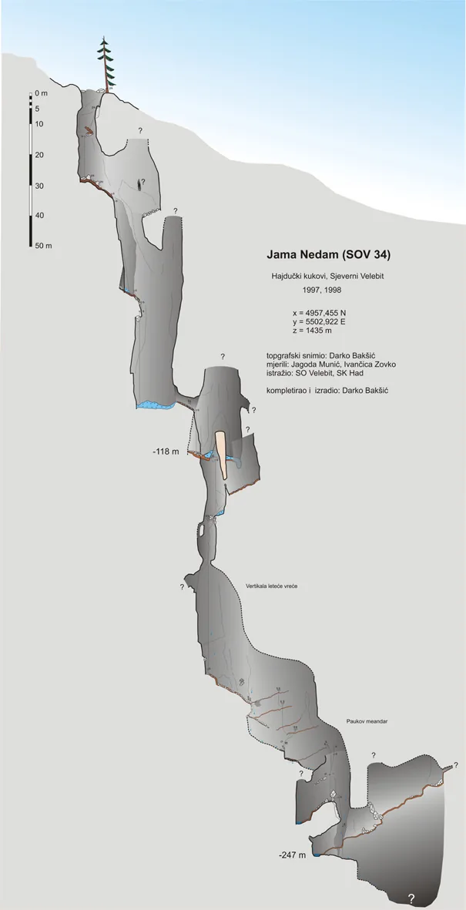

"Nedam" je pokleknula
Jama Nedam, radnog naziva SOV 34 donedavno bila je davni, zaboravljeni san Velebitaša. Donedavno, jer odsada je to tema o kojoj ćemo često pričati...

Jama Nedam, radnog naziva SOV 34 donedavno bila je davni, zaboravljeni san Velebitaša. Donedavno, jer odsada je to tema o kojoj ćemo često pričati (ili se barem tome nadamo).
Jama je pronađena 1997. godine (Darko Bakšić i Ivan Glavaš), a godinu kasnije dosegnuto je tadašnje dno (-247 m). Na dnu se nalazi ogromni neprolazni meandar iz kojeg se osjeća jako strujanje zraka. 1998. jedini je Troha prošao dio u suženju, ušao u manju dvoranicu iza koje se suženja nastavljaju. Tada je iz sasvim očitog razloga, jama dobila naziv Nedam. Proširivanje na dnu, u djelu meandra kroz koji protječe voda, započeto je 2005. godine, a nakon toga sva čežnja za prolazom pada lagano u zaborav.
U fokus Velebitaša vraća se prošle godine kada je jama opremljena do dna, međutim istraživanja se nastavljaju tek 8.6.2019. Taj vikend okupio je iznimno šaroliku Velebitašku ekipu. Dio ekipe u sastavu Tea, Edo, Jonathan, Mirka i Helena bili su zaduženi za riješavanje logistike i pripremu terena za nadolazeću ekspediciju. Drugi dio ekipe koju su činili Ana, Fero, David, Tomislav i Marina spustio su se u Nedam kako bi izvidjeli situaciju. Shvativši da je dio gdje se proširivalo i dalje neprolazan te da su to preteški metri odlučuju se na drugačiji potez - pokušati proći 25 m više u meandru iza kojeg kamen lijepo pada (može se čuti na videu ispod).
[youtube https://www.youtube.com/watch?v=QySFlYckjpI&w=560&h=315]Povučeni natrag zvukom pada kamena, istraživanja nastavljamo za produženi vikend (20.-23.6.2019.) Skupina Velebitaša Tea, Čajko, Ela, Katarina, Igor, Hrvoje i Marina te Dejan Blaženović iz SD Ponir-a (Banja Luka) uputila se na mjesto gdje je bio stari logor Lubuške. Prvi dan u Nedam ulaze Tea, Čajko i Marina te nastavljaju širenje. Uzbuđenje raste znajući da je trenutak prolaza u neki širi dio veoma blizu. Drugi dan Dejo i Marina prolaze suženje te se spuštaju 20-ak m niže. Tamo nailaze na veliki širi horizontalni dio meandara, paralelan s meandrom na starom dnu. Švrljajući po meandru pronalaze dio koji je prolazan dalje u dubinu, a iza kojeg se vrlo vjerojatno nalazi širi prostor. Znatiželja je Velebitašima u krvi, a kako bi saznali što još Nedam skriva, jedino što preostaje je - spustiti se...
Što se krije ispod meandra? Koliko duboko će nam Nedam dati? To još uvijek možemo samo pretpostavljati, ali garantirano Nedam će pronaći svoje mjesto na popisu najdubljih jama RH.
Zasad, samo jedno je sigurno – entuzijazam oko ovogodišnje ekspedicije u naglom je porastu!
[gallery ids="2652,2653,2654,2655,2656,2657,2658,2659,2660,2661,2662,2663,2664,2665,2666" type="rectangular"]